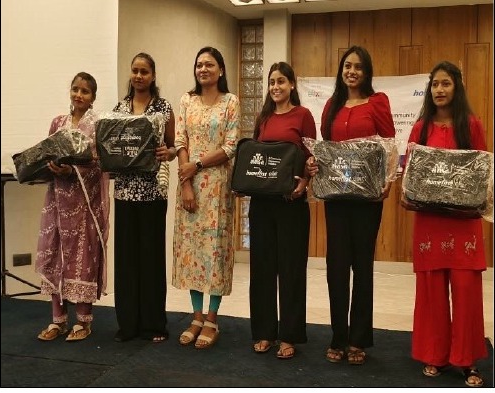

Project Sashakt · AhmedabadA Community
A Community
Empowering Initiative
Helping families access healthcare, education, skills and earning opportunities for a better future.
12,000Families covered7,000 Narol · 5,000 Naroda
9,397School health check-ups5,808 Narol · 3,589 Naroda
4,528OPD visits1,927 Narol · 2,601 Naroda
4,407Skilling participants3,004 Narol · 1,403 Naroda
4,054Financial literacy reach1,982 Narol · 2,072 Naroda
317Diva participants179 Narol · 138 Naroda
Who we are
Helping families build a better future
Project Sashakt began in 2021. Run by Elixir Foundation and supported by Home First Finance Company, it brings health services, education, skills training and earning opportunities closer to families.
Our journey →

Narol skilling graduationOur four programme pillars
What we do
01 / PILLAR
Health & Medical
Medical care, health checks and health awareness.
Learn more →02 / PILLARSkilling & Employment
Practical skills and training for jobs.
Learn more →03 / PILLAREducation & School Development
Learning activities and better school facilities.
Learn more →04 / PILLARLivelihood & Community Development
Earning opportunities, money skills and community support.
Learn more →July–September 2026
Quarterly activity highlights
1,895OPD visits
2,408Financial literacy participation
4,719Science Lab participation
168Science City participants
26Medical OPD sessions
12Schools with science labs
284Eye screenings · Narol
192Skilling graduates · Narol
Explore Sashakt
Find a programme
Find programmes and activities in your community.
Explore all programmes →